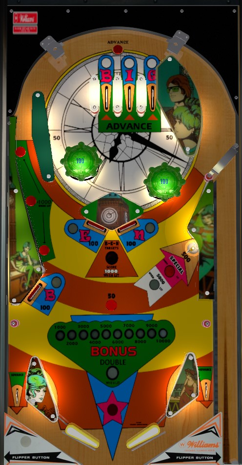

Shoot the top of the table repeatedly to get bonus advances from the top lanes, then once the base bonus is maxed at 10,000 points, hit the three drop targets to light double bonus and make all drops worth 1,000 points. Drop targets, out lanes, and top rollover button also advance bonus. Once bonus is maxed and doubled: completing the BIG top lanes once lights the left orbit rollover buttons for 1,000 each and the right saucer for 5,000; completing the BIG top lanes twice lights the right saucer for special; completing the BEN drop targets a second time scores extra ball.
Special can award a free game, 10,000 points plus an extra ball, or just 10,000 points. The extra ball from two drop target completions can't be worth points instead. If special is worth a free game, shooting the saucer will give no points when lit for special, so if this situation arises in competition play, don't complete the BIG top lanes a second time on the same ball. Progress on the current completion of Big or Ben is carried over to the next ball, but all awards associated with completions of words (double bonus, 1,000 point drops, saucer values) is wiped when the ball drains.
The below image of Big Ben's playfield was taken from the VPX recreation by HSM.
